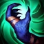

Son passif
Le passif de Nasus draine l'énergie spirituelle de son adversaire et profite d'un bonus de Vol de vie.
Il est connu pour sa capacité à générer beaucoup de dégats à distance avec sa compétence principale, Furie Sanguinare, qui augmente les dégats infligés par ses attaque sde base et ses coups critiques en fonction de son stack de Fureur (qui s'accumulent lorsqu'il inflige des dégâts avec ses compétences).
En général, Nasus est un champion fort en fin de partie grâce à sa capactié à générer beaucoup de dégats à distance, mais il peut être fragile en début de partie et difficile à jouer efficacement si vous ne générez pas assez de stacks de Fureur. Il est généralement joué en top lane, bien que certaines personnes le jouent aussi en jungle.
Le passif de Nasus draine l'énergie spirituelle de son adversaire et profite d'un bonus de Vol de vie.
"Furie Sanguinaire" est un coup de pouce qui augmente les dégâts de ses attaques de base et ses coups critiques.
"Siphon de la Mort" est un sort de zone qui inflige des dégâts de base et des dégâts supplémentaires en fonction de la puissance de vie manquate de l'ennemi ciblé. Il donne aussi un buff de vitesse d'attaque pour Nasus quand il touche un ennemi.
"Carcasse en putréfaction" est un sort de zone qui rend l'ennemi touché vulnérable pour que Nasus et ses alliés lui infligent plus de dégâts.
"Souffle de la mort" est un sort de zone de zone qui inflige des dégâts et ralentit les ennemis.
Nasus est un personnage de type bruiser dans le jeu League of Legends. Cela signifie qu'il a un bon équilibre entre les dégats de soutien, la survie et la capacité à engager ou à contrôler la zone de combat.
En général, Nasus est souvant joué comme un top laner, c'est-à-dire qu'il joue dans la ligne de départ la plus proche de la base. Il peut également être utilisé en jungle, pour gank et control de map. En raison de sa capacité à infliger des dégâts croissants et à survivre dans les combats prolongés, Nasus est souvent utilisé pour assister les alliés et pour dominer les combats à un contre un. Il peut également être utilisé comme un split-pusher (joueur qui se sépare de son équipe pour détruire les tours ennemies) ou un peeler (joueur qui protège les alliés en repoussant les ennemis).
C'est le skin de Nasus par défaut et il est gratuit. Le champion Nasus coûte 585 Points Riot.
Le prix du skin Nasus galactique est de 520 Points Riot. Nasus Goth fait partie du thème Galactic.
Le prix du skin Nasus pharaon est de 520 Points Riot. Nasus Goth fait partie du thème Pharaoh.
Le prix du skin Nasus chevalier de l'effroi est de 975 Points Riot. Nasus Goth fait partie du thème Dreadknight.
Le prix du skin Nasus K-Nine est de 975 Points Riot. Nasus Goth fait partie du thème Riot.
Le prix du skin Nasus infernal est de 1820 Points Riot. Nasus Goth fait partie du thème Infernal.
Le prix du skin Archiduc Nasus est de 750 Points Riot. Nasus Goth fait partie du thème High Society.
Le prix du skin Nasus brise-monde est de 750 Points Riot. Nasus Goth fait partie du thème Worldbreaker.
Le prix du skin Nasus gardien est de 1350 Points Riot. Nasus Goth fait partie du thème Lunar Revel.
Le prix du skin Proto Nasus est de 1350 Points Riot. Nasus Goth fait partie du thème Battlecast.
Le prix du skin Nasus astro-groove est de 1350 Points Riot. Nasus Goth fait partie du thème Space Groove.
Le prix du skin Nasus titan blindé est de 1350 Points Riot. Nasus Goth fait partie du thème Steel Valkyries.